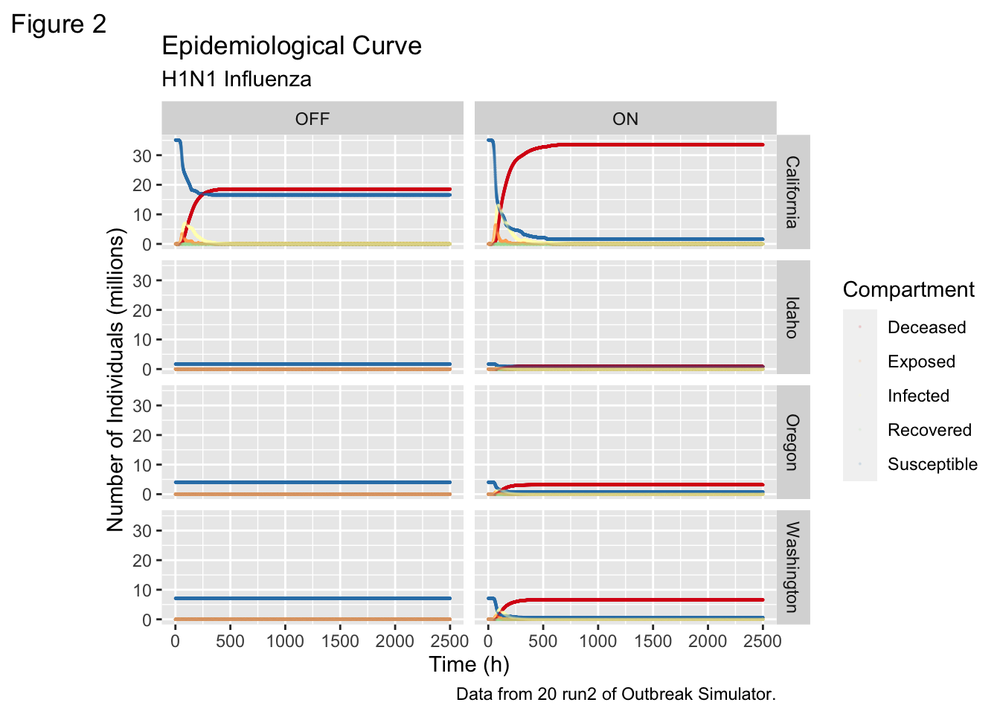
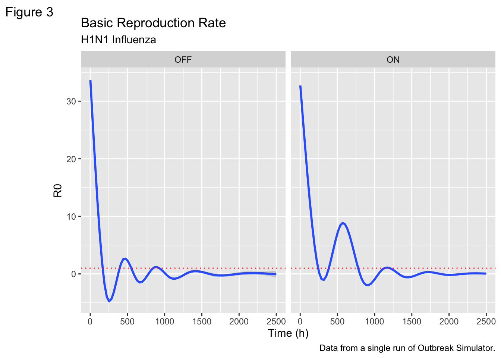

This is a demo scenario for Outbreak Simulator. A complete description of the project can be found here
GRAPH INTERPRETATION
Epicurve
The following graph is an Epidemiological Curve using data from 20 runs of Outbreak Simulator. It shows the number of people in the various categories of the epidemiological compartment model under two conditions - Airports on and off.
Sus<-dflong%>%filter(Compartment =="Susceptible")ggplot(dflong, aes(x=Time, y = Count/10^6, color=as.factor(Compartment)))+geom_smooth()+geom_point(size=0.1, alpha=0.1)+labs(title ="Epidemiological Curve",subtitle ="H1N1 Influenza",caption ="Data from 20 runs of Outbreak Simulator.",tag ="Figure 1",x ="Time (h)",y ="Number of Individuals (millions)",colour ="Compartment" )+scale_colour_brewer(type ="seq", palette ="Spectral")+facet_wrap(~Airports)
`geom_smooth()` using method = 'gam' and formula = 'y ~ s(x, bs = "cs")'
Warning: Computation failed in `stat_smooth()`
Computation failed in `stat_smooth()`
Caused by error in `gam.reparam()`:
! NA/NaN/Inf in foreign function call (arg 3)
But what about….. STATES????
Code
stateslong <- df %>%pivot_longer(cols =2:295,names_to =c("State", "Compartment"),names_pattern ="(.+?)_(.)",values_to ="Count")fewerstates<-stateslong%>%filter(State =="Washington"| State =="Idaho"| State =="California"| State =="Oregon" )%>%mutate(Compartment =recode(Compartment, S ="Susceptible",E ="Exposed",I ="Infected",V ="Vaccinated",R ="Recovered",D ="Deceased"))%>%filter(Compartment !="Vaccinated")ggplot(fewerstates, aes(x=Time, y = Count/10^6, color = Compartment))+geom_point(size=0.1, alpha=0.1)+facet_grid(State~Airports)+labs(title ="Epidemiological Curve",subtitle ="H1N1 Influenza",caption ="Data from 20 run2 of Outbreak Simulator.",tag ="Figure 2",x ="Time (h)",y ="Number of Individuals (millions)",colour ="Compartment" )+scale_colour_brewer(type ="seq", palette ="Spectral")

SUPER ADVANCED EPIDEMIOLOGY
Real time R0 calculations.
R0, also known as the basic reproduction number, is a measure of the average number of secondary infections produced by a single infectious individual in a completely susceptible population. Calculating R0 from time series values of S (Susceptible), I (Infected), and R (Recovered) can be done using a mathematical model, such as the Susceptible-Infected-Recovered (SIR) model.
The SIR model is a set of ordinary differential equations that describe the dynamics of infectious diseases. The equations are:
dS/dt = -β * S * I / N dI/dt = β * S * I / N - γ * I dR/dt = γ * I where:
S is the number of susceptible individuals I is the number of infected individuals R is the number of recovered individuals N is the total population (N = S + I + R) β (beta) is the transmission rate per contact γ (gamma) is the recovery rate The basic reproduction number R0 is given by the formula:
R0 = β / γ
In order to calculate R0 from time series data of S, I, and R, you’ll need to estimate the values of β and γ. One way to do this is to use curve-fitting techniques to fit the SIR model to your data. Once you have estimates for β and γ, you can calculate R0 using the formula above.
Here’s an example using R and the deSolve package to fit the SIR model to sample data and estimate R0:
Code
ggplot(dflong, aes(x=Time, y= R0))+geom_smooth()+labs(title ="Basic Reproduction Rate",subtitle ="H1N1 Influenza",caption ="Data from a single run of Outbreak Simulator.",tag ="Figure 3",x ="Time (h)",y ="R0" )+scale_colour_brewer(type ="seq", palette ="Spectral")+geom_hline(yintercept =1, color ="red", linetype =3)+facet_wrap(~Airports)
`geom_smooth()` using method = 'gam' and formula = 'y ~ s(x, bs = "cs")'

Code
ggplot(dflong, aes(x=Time, y= Beta))+geom_smooth()+labs(title ="SIR parameters: Beta",subtitle ="H1N1 Influenza",caption ="Data from a single run of Outbreak Simulator.",tag ="Figure 4",x ="Time (h)",y ="Parameter Estimate" )+scale_colour_brewer(type ="seq", palette ="Spectral")+geom_hline(yintercept = .5, color ="red", linetype =3)+facet_wrap(~Airports)
`geom_smooth()` using method = 'gam' and formula = 'y ~ s(x, bs = "cs")'
Code
ggplot(dflong, aes(x=Time, y= Gamma))+geom_smooth()+labs(title ="SIR parameters: Gamma",subtitle ="H1N1 Influenza",caption ="Data from a single run of Outbreak Simulator.",tag ="Figure 4",x ="Time (h)",y ="Parameter Estimate" )+scale_colour_brewer(type ="seq", palette ="Spectral")+geom_hline(yintercept =0, color ="red", linetype =3)+facet_wrap(~Airports)
`geom_smooth()` using method = 'gam' and formula = 'y ~ s(x, bs = "cs")'
Source Code
---title: "Outbreak Simulator on Falcon!"description: "Headless mode allows for many replicates!"code-fold: true code-tools: true---```{r setup, include=FALSE}library(tidyverse)library(dplyr)library(purrr)```## WelcomeThis is a demo scenario for Outbreak Simulator. A complete description of the project can be found [here](https://professorpolymorphic.github.io/PolymorphicWeb/Games/OutbreakSimulator/)## GRAPH INTERPRETATION### EpicurveThe following graph is an Epidemiological Curve using data from a single run of Outbreak Simulator. It shows the number of people in the various categories of the epidemiological compartement model. ```{r}file_list <-list.files(pattern ="*.csv") df <- file_list %>%map_df(~read_csv(., show_col_types =FALSE) %>%mutate(source_file = .x)) ``````{r}df<-df%>%mutate_at(c(1:295), as.numeric)dftotal <- df%>%select(Time, source_file, starts_with("Totals_"))%>%rename(Time=Time,S=Totals_S,E=Totals_E,V=Totals_V,I=Totals_I,R=Totals_R,D=Totals_D,source_file=source_file)for (i in1:length(dftotal$Time)){ dftotal$dS[i] <- dftotal$S[i]-dftotal$S[i+1] dftotal$dR[i] <- dftotal$R[i+1]-dftotal$R[i] dftotal$dI[i] <- dftotal$I[i+1]-dftotal$I[i] dftotal$dD[i] <- dftotal$D[i+1]-dftotal$D[i]}dftotal<- dftotal%>%mutate(N= S+E+I+V+R+D)%>%mutate(Beta = dS*N/(S*I+1))%>%mutate(Gamma = dD/(I+1))%>%mutate(R0 = Beta/Gamma)%>%filter(Beta<10)%>%filter(R0<10^3)dflong<-dftotal%>%pivot_longer(cols =c("S", "E", "I","V", "R", "D"),names_to ="Compartment", values_to ="Count")dflong <- dflong%>%mutate(Compartment =recode(Compartment, S ="Susceptible",E ="Exposed",I ="Infected",V ="Vaccinated",R ="Recovered",D ="Deceased"))%>%filter(Compartment !="Vaccinated")``````{r}Sus<-dflong%>%filter(Compartment =="Susceptible")ggplot(dflong, aes(x=Time, y = Count/10^6, color=as.factor(Compartment)))+geom_smooth()+geom_point(size=0.1, alpha=0.1)+labs(title ="Epidemiological Curve",subtitle ="H1N1 Influenza",caption ="Data from a single run of Outbreak Simulator.",tag ="Figure 1",x ="Time (h)",y ="Number of Individuals (millions)",colour ="Compartment" )+scale_colour_brewer(type ="seq", palette ="Spectral")```## But what about..... STATES????```{r}stateslong <- df %>%pivot_longer(cols =2:295,names_to =c("State", "Compartment"),names_pattern ="(.+?)_(.)",values_to ="Count")fewerstates<-stateslong%>%filter(State =="New Mexico"| State =="Idaho"| State =="California"| State =="New York" )%>%mutate(Compartment =recode(Compartment, S ="Susceptible",E ="Exposed",I ="Infected",V ="Vaccinated",R ="Recovered",D ="Deceased"))%>%filter(Compartment !="Vaccinated")ggplot(fewerstates, aes(x=Time, y = Count/10^6, color = Compartment))+geom_point(size=0.1, alpha=0.1)+facet_wrap(~State)+labs(title ="Epidemiological Curve",subtitle ="H1N1 Influenza",caption ="Data from a single run of Outbreak Simulator.",tag ="Figure 2",x ="Time (h)",y ="Number of Individuals (millions)",colour ="Compartment" )+scale_colour_brewer(type ="seq", palette ="Spectral")```## SUPER ADVANCED EPIDEMIOLOGYReal time R0 calculations.R0, also known as the basic reproduction number, is a measure of the average number of secondary infections produced by a single infectious individual in a completely susceptible population. Calculating R0 from time series values of S (Susceptible), I (Infected), and R (Recovered) can be done using a mathematical model, such as the Susceptible-Infected-Recovered (SIR) model.The SIR model is a set of ordinary differential equations that describe the dynamics of infectious diseases. The equations are:dS/dt = -β * S * I / NdI/dt = β * S * I / N - γ * IdR/dt = γ * Iwhere:S is the number of susceptible individualsI is the number of infected individualsR is the number of recovered individualsN is the total population (N = S + I + R)β (beta) is the transmission rate per contactγ (gamma) is the recovery rateThe basic reproduction number R0 is given by the formula:R0 = β / γIn order to calculate R0 from time series data of S, I, and R, you'll need to estimate the values of β and γ. One way to do this is to use curve-fitting techniques to fit the SIR model to your data. Once you have estimates for β and γ, you can calculate R0 using the formula above.Here's an example using R and the deSolve package to fit the SIR model to sample data and estimate R0:```{r}ggplot(dflong, aes(x=Time, y= R0))+geom_smooth()+labs(title ="Basic Reproduction Rate",subtitle ="H1N1 Influenza",caption ="Data from a single run of Outbreak Simulator.",tag ="Figure 3",x ="Time (h)",y ="R0" )+scale_colour_brewer(type ="seq", palette ="Spectral")+geom_hline(yintercept =1, color ="red", linetype =3)ggplot(dflong, aes(x=Time, y= Beta))+geom_smooth()+labs(title ="SIR parameters: Beta",subtitle ="H1N1 Influenza",caption ="Data from a single run of Outbreak Simulator.",tag ="Figure 4",x ="Time (h)",y ="Parameter Estimate" )+scale_colour_brewer(type ="seq", palette ="Spectral")+geom_hline(yintercept = .5, color ="red", linetype =3)ggplot(dflong, aes(x=Time, y= Gamma))+geom_smooth()+labs(title ="SIR parameters: Gamma",subtitle ="H1N1 Influenza",caption ="Data from a single run of Outbreak Simulator.",tag ="Figure 4",x ="Time (h)",y ="Parameter Estimate" )+scale_colour_brewer(type ="seq", palette ="Spectral")+geom_hline(yintercept =0, color ="red", linetype =3)```